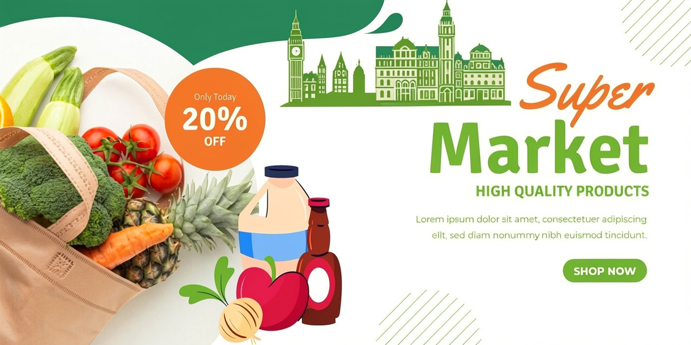

A city supermarket stands as a dazzling monument to modern convenience, consumer culture, and global logistics, serving as the central nervous system of neighborhood sustenance. Inside its sliding glass doors lies a microcosm of the modern world, a place where the agricultural output of distant continents converges with the daily rhythms of local urban life. More than just a commercial space to exchange currency for nourishment, the urban supermarket is a sensory phenomenon, a social crossroads, and an architectural marvel designed to streamline the chaotic necessity of human foraging into an efficient, pleasant, and calculated experience. From the carefully calibrated temperature zones to the meticulous arrangement of thousands of colorful products, it reflects the evolving tastes, priorities, and socio-economic dynamics of the city it serves. For the thousands of patrons who cross its threshold every week, the supermarket is an indispensable anchor of daily existence, bridging the gap between farm and fork with staggering efficiency.The layout of a city supermarket is never accidental; it is a masterclass in behavioral psychology and spatial engineering designed to maximize both the shopper’s journey and the store’s profitability. .The Fresh Threshold: Upon entering, customers are almost universally greeted by the produce department. This "decompression zone" floods the senses with vibrant colors, fresh mists, and earthy aromas, instantly establishing an psychological impression of health, vitality, and freshness. .The Perimeter Strategy: Essential staples like milk, eggs, meat, and bread are strategically placed along the furthest back walls and corners. This intentional placement forces shoppers to traverse the entire length of the store, exposing them to thousands of intermediate products and tempting impulse buys along the way. .Eye-Level Economics: The middle aisles form a labyrinth of processed, packaged, and canned goods organized by strict hierarchy. Premium name brands occupy the "bullseye zone" at eye level, while budget options rest near the floor and kids' cereals sit perfectly at the sightline of a toddler riding in a shopping cart. The sensory experience is further curated through environmental control. The bright, shadowless fluorescent lighting eliminates blemishes on fruit, making everything look hyper-real and deeply appetizing. A continuous loop of soft, mid-tempo background music plays overhead, subtly slowing down the walking pace of shoppers so they spend more time browsing. The air is deliberately cool, not only to preserve perishable inventory but also to keep customers alert and moving comfortably through the aisles. Every element—from the width of the rows to the tactile grip of the shopping basket—is engineered to prolong the visit and elevate the average basket value. A Symphony of Global Logistics and Micro-Sustenance.Beneath the calm, brightly lit consumer exterior lies an incredibly complex network of supply chain logistics that operates 24 hours a day. The diversity of products available on a single city supermarket shelf is a testament to globalization. .Global Sourcing: In the span of a few paces, a shopper can pick up avocados from Mexico, kiwi fruit from New Zealand, cheeses from France, and spices from India. .Perpetual Restocking: While the front of the house belongs to the consumers, the back of the house is an industrial zone of heavy lifting. Overnight, when the city sleeps, massive delivery trucks dock at the loading bays. Teams of night-shift workers dismantle pallets, verify digital manifests, and restock the shelves so that the illusion of infinite abundance remains unbroken when the doors reopen at dawn. .Cold Chain Integrity: Advanced refrigeration tracking systems monitor temperature fluctuations in real-time, ensuring that ice cream remains frozen and seafood stays pristine, mitigating the massive risk of foodborne illnesses. Modern supermarkets rely heavily on predictive inventory software. Every time a barcode is scanned at the checkout, the store’s central database registers the sale, automatically adjusting stock counts and predicting future demand based on historical data, weather patterns, and upcoming holidays. This integration of technology ensures that the city supermarket rarely runs out of essentials, maintaining a delicate balance between minimizing waste and satisfying the erratic purchasing habits of thousands of urban residents. Beyond its economic and logistical functions, the city supermarket serves as an accidental community hub—a neutral ground where the diverse strata of urban society collide. On any given evening, the aisles host a democratic cross-section of the neighborhood: corporate executives in tailored suits browse the same organic salad bar as cash-strapped college students calculating the cost of instant noodles. Busy parents rush through the lanes juggling crying toddlers and frozen dinners, while elderly citizens walk slowly, using their weekly grocery trip as a valued opportunity for social interaction and conversation with the staff. The checkout line itself is a fascinating study in human behavior and modern transition. It represents the final boundary of the supermarket experience, where automated efficiency meets human connection. Here, the traditional camaraderie between a friendly cashier and a regular customer now coexists with rows of glowing self-checkout kiosks. These automated bays appeal to the fast-paced, tech-savvy urbanite seeking an anonymous, friction-free exit. Meanwhile, the checkout lane remains a prime psychological battleground for impulse buys, lined with brightly colored candies, seasonal magazines, pocket-sized electronics, and cold beverages designed to catch the eye of waiting shoppers at their point of highest vulnerability.